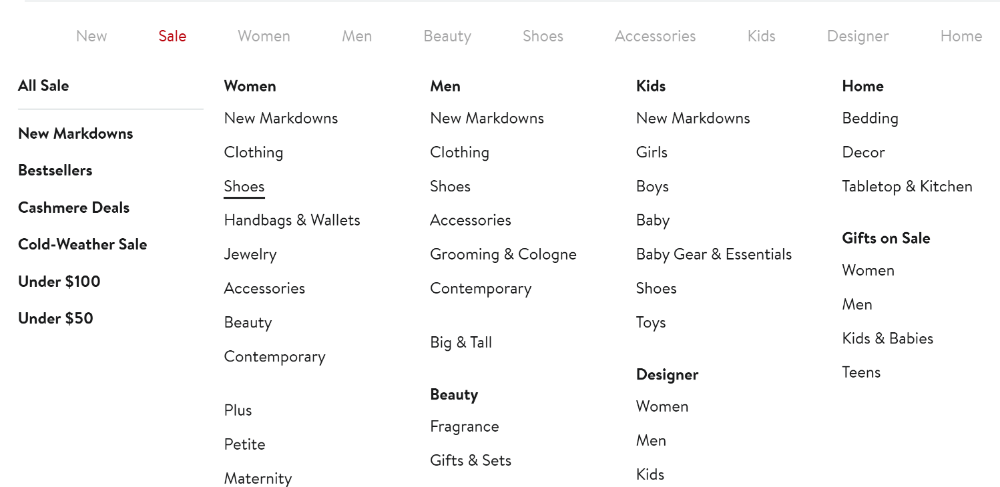
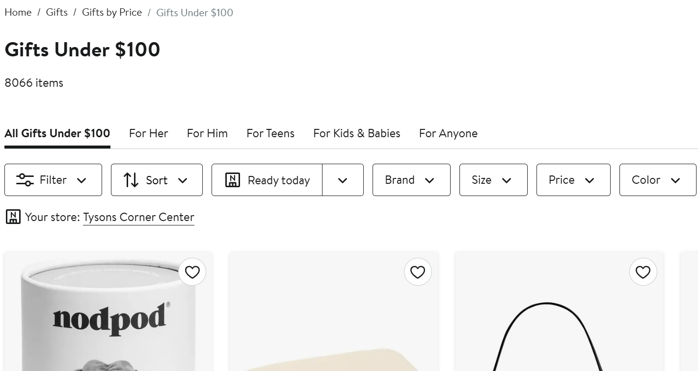
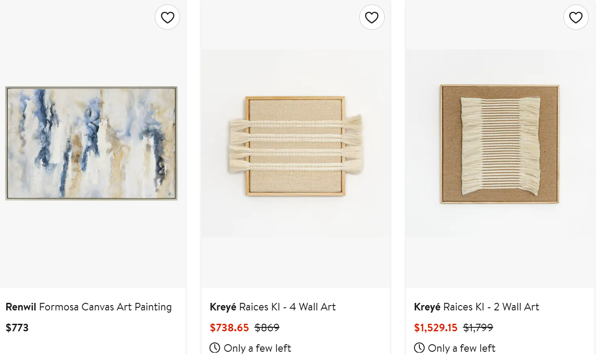
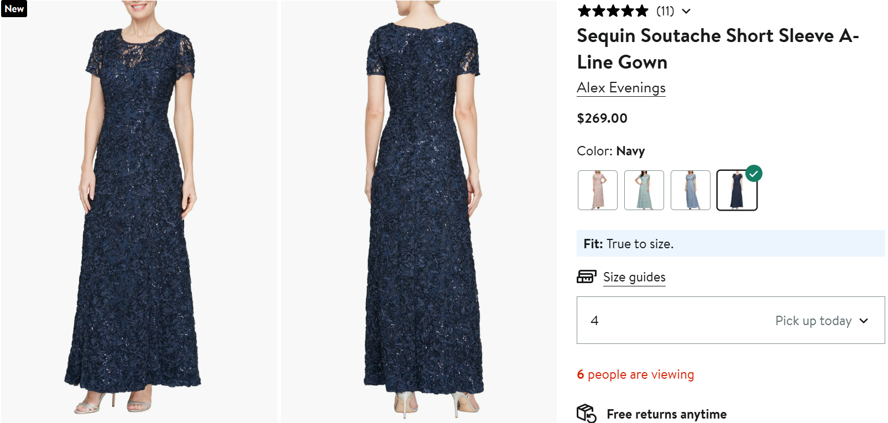
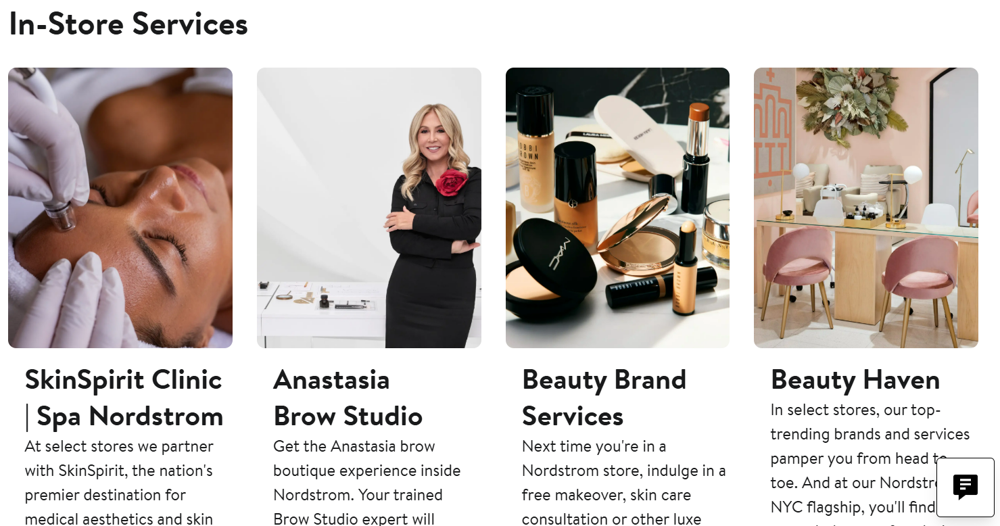

This usability test analyzed a user completing common shopping and service tasks on Nordstrom.com. Overall, the user was confident navigating the site and excited about plush gift items, but had some difficulty locating the highest-priced products and the in-store styling service.

User searched for formal shoes, filtered by sale, and added a size 6M pair to cart. Initial shoes seemed too fancy or expensive.
Time: 40.96 secs

User selected a plush toy under $100 (dragon plush) and was excited about the item. No major difficulties navigating.
Time: 24.57 secs

User scrolled through wall art options but did not sort by price, so they did not immediately select the highest-priced item.
Time: 52.23 secs

User selected a blue dress in size 4 appropriate for a wedding. User was satisfied with available options.
Time: 45.12 secs

User navigated menus to find the in-store styling appointment page and successfully booked it. User was slightly confused locating it initially in the footer.
Time: 140.52 secs